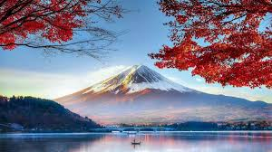

|
ÜLKELER
|
HAKKIMIZDA | İLETİŞİM | ||||
Fuji Dağı (富士山 Fuji-san), Honshu adasında bulunan, 3.766 m (12.385 ft) yüksekliğiyle Japonya’daki en yüksek dağdır. Asya adalarında bulunan ikinci en yüksek yanardağdır (Sumatra adasında bulunan Kerici Dağı'ndan sonra) ve dünya üzerindeki en yüksek yedinci ada doruğunu oluşturur. Fuji Dağı aktif bir startovolkan olmakla beraber, en son 1707-1708 yılları arasında patladı. Dağ, Tokyo şehrinin 100 km güneybatısında bulunur ve açık havalı günlerde şehirden rahatça görülebilir. Fuji Dağı'nın beş ay boyunca karlı olan simetrik konisi, Japonya'nın kültürel ikonu haline gelmiş, özellikle de sanat ve fotoğrafçılıkta betimlenir; ayrıca turist ve dağcıların sıkça ziyaret ettiği bir doğa harikasıdır. Fuji Dağı, Tate Dağı ve Haku Dağı'nın yanında, Japonya'nın üç "kutsal dağından" (三霊山, Sanreizan) biridir. Doğal güzelliği ile birlikte Japonya'nın tarihsel mekanlarından birisidir. 22 Haziran 2013'te Dünya Miras Listesi'ne kültürel bir mekan olarak eklendi. UNESCO'ya göre, Fuji Dağı "birçok sanatçı ve şaire ilham kaynağı olmuş ve insanlar yüzyıllardır oraya hacca gelir." UNESCO Fuji Dağı mahalinde 25 tane kültürel mekan tanımaktadır.  Bu mekanların içinde dağın kendisi, Shinto tapınağı, Fujisan Hongu Sengen Taisha ve 1290 yılında kurulan Budist Taisekiji Baş Tapınak'ı bulunur; tapınak sonrasında Japon ukiyo-e sanatçısı Katsushika Hokusai tarafından resmedilmiştir. ugün, Fuji dağı turizm ve dağcılık için uluslararası bir destinasyondur.20. yüzyılın başlarında, popülist eğitimci Frederick Starr'ın Fuji dağı'na 1913, 1919 ve 1923'te yaptığı çeşitli tırmanışlar hakkındaki Chautauqua dersleri Amerika'da yaygın olarak biliniyordu. Ünlü bir Japon atasözü, bilge bir kişinin hayatında bir kez ancak yalnızca bir aptalın iki kez Fuji dağına tırmanacağını söyler. Fuji dağı çok sayıda filmde görülmek,Infiniti logosuna ilham vermek[16] ve hatta tıpta Fuji dağı işareti ile görünmek de dahil olmak üzere Japon kültüründe popüler bir sembol olmaya devam etmektedir.[ Eylül 2004'te, zirvedeki personelli meteoroloji istasyonu 72 yıl çalıştıktan sonra kapatıldı. Gözlemciler, tayfunları ve şiddetli yağmurları tespit eden radar taramalarını izlediler. 3.780 m (12.402 ft) ile Japonya'nın en yüksek meteoroloji istasyonu olan dağdaki istasyonun yerini tam otomatik bir meteoroloji sistemi aldı. Fuji Dağı, 22 Haziran 2013 tarihinde Kültürel Sit olarak Dünya Mirası Listesi'ne eklendi.
Tokyo Fuji Sanat Müzesi (東京富士美術館, Tōkyō Fuji Bijutsukan ) , Daisaku Ikeda tarafından kurulmuş ve 1983 yılında Japonya'nın Tokyo kentindeki Hachiōji kentindeki Sōka Üniversitesi kampüsünün yakınında açılmıştır. Yeni kanat 2008 yılında eklenmiştir. Yaklaşık otuz bin eserden oluşan koleksiyon, Japonya, Asya ve Avrupa'nın sanat ve kültürlerini kapsamaktadır ve Müze, gezici sergilerini diğer ülkelere taşımaktadır. Fuji Sanat Müzesi, Sôka Gakkai tarikatına aittir ve koleksiyonu, müritlerinin bağışladığı milyarlarca dolar kullanılarak satın alınmıştır. Tokyo Fuji Sanat Müzesi koleksiyonunun bir kısmının, müze tarafından haberi olmadan satın alınan çalıntı parçalardan oluştuğundan şüpheleniliyor. Leonardo da Vinci'ye atfedilen bir Rönesans şaheseri olan Tavola Doria , 60'larda İtalya'da çalınmış ve müze tarafından 1992'de satın alınmıştır. İtalyan hükümeti, müzeyle sıkı görüşmeler yapmak zorunda kalmış ve müze sonunda 2012'de da Vinci panelini iade etmeyi kabul etmiştir. 2015'te bir Amerikalı avukat, 1984'te İngiltere'de çalınan ve yıllar sonra müze tarafından satın alınan İngiliz ressam Joshua Reynolds'a ait bir tabloyla ilgili olarak müzeyle iletişime geçmiştir. Fuji Sanat Müzesi, tabloyu sahibine iade etmeyi yasal olarak reddetmiş ve bir milyon pound tazminat talep etmiştir.
Fushimi Inari Taisha Tapınağının tarihi hakkında aslında tam net bilgi yoktur. Tapınağın 711 yılında Hata-no-Iroko tarafından bulunduğu söylenmektedir. Tapınak içerisindeki tüm yapılar 21 Mart 1468 yılında Onin savaşında dolayı yanarak ile kül olmuştur. Ardından 1499 yılında tapınak girişindeki Honden isimli yapı yapılmıştır. Honden’in hemen önündeki tapınak girişinde ki büyük turuncu kapı ise 1589 yılında Toyotomi Hideyoshi tarafından Fushimi Inari’ye bağışlanmıştır. Tapınağın en ilginç ve dikkate değer olan yapısı binlerce turuncu renkli torii isimli kapılarıdır. İkinci Dünya Savaşında şehre bir bomda dahi düşmemiş olması sayesinde şehrin tüm tapınakları ayaktadır. Tapınak girişinde ilk karşımıza çıkan büyük turuncu renkli kapı. Kapının hemen arkasındaki bina tapınağın ana yapısı olan Honden’dir. Tapınağa insanlar dilekler dilemek için geliyor. Dilekleri kabul olanlar ise isimleri yazılı turuncu kapıları tapınağa bağışlıyor. Tapınağa gitme fırsatınız olursa her bir turuncu direk üzerinde isimler yazılı olduğunu fark edeceksiniz. Turuncu kapılar birbirine çok yakın mesafede olduğu için adeta bir tünelden geçiyormuşsunuz hissine kapılmamak elde değil. Yeşillikler içinde tünelden tünele geçip, karşımıza gölet çıkıyor. Ruhaniliğin doğa ile birleştiği muazzam yerlerden biridir Fushimi Inari tapınağı. Tapınak içinde bir çok tilki heykeli bulunuyor. Bunlar Tanrı Inari’nin habercileridir.
Himeji Kalesi (姫路城, Himeji-jō ) Japonya'nınHyōgo
EyaletindekiHimejişehrindebulunanbir tepeJapon kalesi. Kale,feodal dönemden.Kale ,parlak
beyaz dış yüzeyi ve uçan bir kuşa benzemesi nedeniyleHakuro-jōveyaShirasagi-jō
("BeyazBalıkçılKalesi" veya "Beyaz Balıkçılolarak bilinir .
Azuchi-Momoyama döneminden itibaren hemen hemen tüm Japon kalelerinde olduğu gibi , en
belirgin yapı olan tenshu (天守, ana kale ) , barış zamanlarında depo olarak, savaş
zamanlarında ise müstahkem bir kule olarak kullanılırdı ve daimyo'nun (大名, feodal lord )
hükümet ofisleri ve ikametgahları tenshu ve çevresindeki yagura'nın (櫓, taretler)
yakınındaki tek katlı binalardan oluşan bir grupta yer alırdı .
Himeji Kalesi, Akamatsu Norimura'nın Himeyama tepesinin üzerine bir kale inşa ettiği
1333 yılına dayanır . Kale sökülüp 1346'da Himeyama Kalesi olarak yeniden inşa edildi ve
iki yüzyıl sonra Himeji Kalesi olarak yeniden düzenlendi. Himeji Kalesi daha sonra
1581'de üç katlı bir kale kulesi ekleyen Toyotomi Hideyoshi tarafından önemli ölçüde
yeniden düzenlendi .
1600'de Tokugawa Ieyasu, kaleyi Sekigahara Muharebesi'ndeki yardımından dolayı Ikeda
Terumasa'ya verdi ve Ikeda, kaleyi 1601'den 1609'a kadar tamamen yeniden inşa ederek
büyük bir kale kompleksine genişletti.
Daha sonra 1617'den 1618'e kadar Honda Tadamasa tarafından kale kompleksine birkaç bina
eklendi. Himeji Kalesi, II. Dünya Savaşı'nda Himeji'nin bombalanmasına ve 1995 Büyük
Hanshin depremi de dahil olmak üzere doğal afetlere rağmen yaklaşık 700 yıldır sağlam
kaldı .
Himeji Kalesi, Japonya'nın en büyük ve en çok ziyaret edilen kalesidir ve 1993 yılında
ülkedeki ilk UNESCO Dünya Mirası Alanları'ndan biri olarak tescil edilmiştir.Kale
kompleksinin orta hendeği içindeki alan , Özel Tarihi Alan olarak belirlenmiştir ve
kalenin beş yapısı da Ulusal Hazineler olarak belirlenmiştir .
Matsumoto Kalesi ve Kumamoto Kalesi ile birlikte Himeji Kalesi, Japonya'nın üç önemli
kalesinden biri olarak kabul edilir. Kale binaları birkaç yıl boyunca restorasyon
çalışmaları geçirdi ve 27 Mart 2015'te halka yeniden açıldı.
Çalışmalar ayrıca onlarca yıllık kir ve pisliği temizleyerek eski gri çatıyı orijinal
parlak beyaz rengine kavuşturdu.
Arashiyama Bambu Korusu (diğer adıyla Sagano Bambu Ormanı) Arashiyama yamaçlarındaki Iwatayama Maymun Parkı . Parkta 170'ten fazla maymun yaşıyor. Maymunlar vahşi olsa da insanlara alışmış durumdalar. Park, Saga-Arashiyama tren istasyonundan çok da uzak olmayan küçük bir dağın üzerinde. Ziyaretçiler maymunlara yaklaşıp fotoğraflarını çekebilirler. Zirvede ziyaretçilerin maymunları besleyebileceği çitle çevrili bir alan var. Arashiyama yamaçlarındaki kiraz çiçekleri ve sonbahar renklerinin manzarasıyla dikkat çeken "Ay Geçiş Köprüsü" (渡月橋, Togetsukyō) . Sagano'lu Heike fahişesi Kogo'nun mezar taşı . Japonya'daki Zen Budizm'inin iki ana mezhebinden biri olan Rinzai okulunun 15 kolundan birinin ana tapınağı olan Tenryū-ji . Atago Dağı'nın eteklerinde yer alan, küçük ve manzaralı bir köy olan Kiyotaki köyü, önemli bir Şinto tapınağına ev sahipliği yapıyor. Bölgenin yarım mil güneyindeki Matsunoo-taisha tapınağı, kutsanmış bir pınara ev sahipliği yapmaktadır. Kyoto bölgesindeki en eski tapınaklardan biridir ve 700 yılında kurulmuştur. Pınarın iddia edilen iyileştirici özellikleri, ürünlerinin kutsanması için birçok yerel sake ve miso şirketine dualar getirir. Kameyama koen, Zhou Enlai'nin Arashiyama'ya yaptığı ziyareti anan bir taşa sahiptir . Kiraz çiçekleri ve dağ yeşilliği onu etkilemiştir. Ziyareti hakkında yazdığı dört şiir bir taş anıta kazınmıştır: "Yağmurda Arashiyama." Sinema oyuncusu Denjirō Ōkōchi'nin Japon tarzındaki evi ve bahçeleri Ōkōchi Sansō . Kiraz ağaçları ilkbaharda çiçek açar ve sonbaharda yaprakları kızarır.